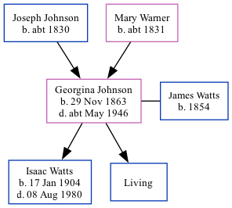

Georgina Elizabeth Watts (née Johnson) 1863 - c1946
[ Home ] | [ Calendar ] | [ Surnames Index ] | [ Family History ]The daughter of Joseph Johnson (an agricultural laborer) and Mary Warner, Georgina Johnson, the first cousin three-times-removed on the father's side of Nigel Horne, was born in St Peter's, Thanet, Kent, England on Nov 29, 18631,2,3, was baptized there on Jan 10, 1864 andhad 2 children with James Watts (a decorator): Isaac and Wolston, along with 1 surviving child.
Throughout her life, Georgina lived in several places: at 1 Serene Place, Broadstairs, Kent, England on Apr 2, 18715; on Arklow Cottage, Church Street, St Peter's, Thanet, Kent on Apr 2, 19116; and on 1 Albion Cottages, Albion Road in Broadstairs on Jun 19, 19211.
She died c. May 1946 in Thanet, Kent4.
Parents
- Joseph was born c. 1830
- Mary Ann was born c. 1831
Children
- Isaac was born on Jan 17, 1904
Citations
- 1921 Census Of England & Wales - Findmypast (was age 57 and the wife of the head of the household)
- England & Wales births 1837-2006 - Findmypast
- Kent Baptisms - Findmypast
- England & Wales deaths 1837-2007 - Findmypast
- 1871 England, Wales & Scotland Census - Findmypast (was age 7 and the daughter of the head of the household)
- 1911 Census for England & Wales - Findmypast (was age 47 and the wife of the head of the household)
Media
Kent Baptisms - GBPRS/CANT/B/96349820
England & Wales Births 1837-2006 - BMD/B/1863/4/AZ/000660/027
1921 Census Of England & Wales - GBC/1921/RG15/04459/0359/02
England & Wales Deaths 1837-2007 - BMD/D/1946/2/AZ/000989/097
1911 Census For England & Wales - GBC/1911/RG14/04507/0581/2
Family Tree
Generated by Ged2Site. Last updated on Jul 20, 2025